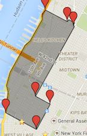

Instructions: the image below tells you what you need to do with your rubbish in real-time. That's it! No input required. As you were. Carry on with your day.
Covering 14th and 6th avenue, to Columbus Circle at 59th Street. Extending West to the Hudson river.
 Monday: household rubbish
Tuesday: no collection
Wednesday: household rubbish
Thursday: no collection
Friday: household rubbish and recycling
Saturday: no collection
Sunday: no collection
This web app is designed to provide an instant summary of the recycling and trash status for the Chelsea & Clinton areas of Manhattan, based on the existing schedule but also factoring in data from the city's 311 API, which automatically updates on page load.
The theory is that by checking this residents can know instantly what is happening and we can minimise the piles of rubbish that build up when schedules change, due to bad weather, or the apocalypse.